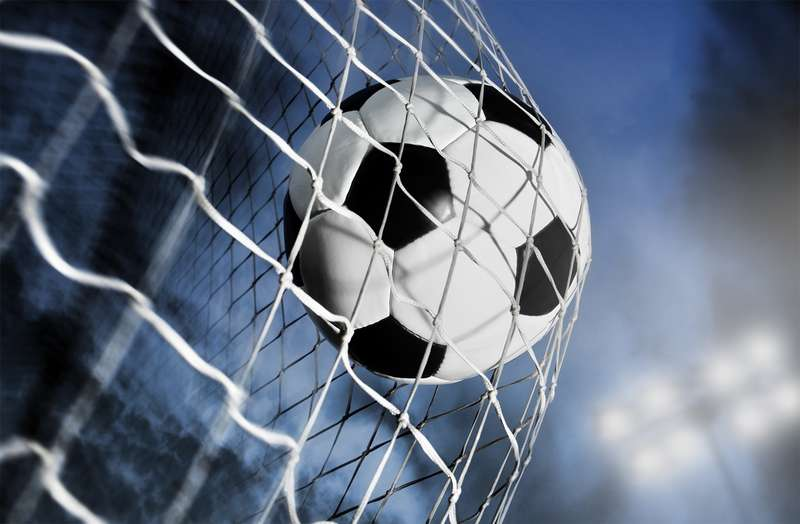
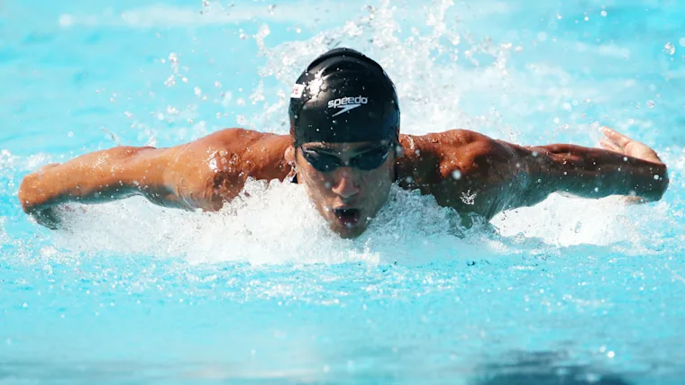

Diffrent sports & clubs
Volleyball
-
Volleyball is a team sport in which two teams of six players are separated by a net.
Each team tries to score points by grounding a ball on the other team's court under organized rules.
[1] It has been a part of the official program of the Summer Olympic Games since Tokyo 1964.
The complete set of rules is extensive,[2] but play essentially proceeds as follows: a player on one of the teams begins a 'rally' by serving the ball (tossing or releasing it and then hitting it with a hand or arm),
from behind the back boundary line of the court, over the net, and into the receiving team's court.[3]
The receiving team must not let the ball be grounded within their court. The team may touch the ball up to 3 times,
but individual players may not touch the ball twice consecutively.[3]
Typically, the first two touches are used to set up for an attack, an attempt to direct the ball back over the net in such a way that the serving team is unable to prevent it from being grounded in their court.

Football
-
Football is a family of team sports that involve, to varying degrees, kicking a ball to score a goal. Unqualified, the word football normally means the form of football that is the most popular where the word is used. Sports commonly called football include association football (known as soccer in some countries); gridiron football (specifically American football or Canadian football); Australian rules football; rugby football (either rugby union or rugby league); and Gaelic football.[1][2] These various forms of football share to varying extent common origins and are known as football codes.
There are a number of references to traditional, ancient, or prehistoric ball games played in many different parts of the world.[3][4][5] Contemporary codes of football can be traced back to the codification of these games at English public schools during the 19th century.[6][7] The expansion and cultural influence of the British Empire allowed these rules of football to spread to areas of British influence outside the directly controlled Empire.[8] By the end of the 19th century, distinct regional codes were already developing: Gaelic football, for example, deliberately incorporated the rules of local traditional football games in order to maintain their heritage.[9] In 1888, The Football League was founded in England, becoming the first of many professional football competitions. During the 20th century, several of the various kinds of football grew to become some of the most popular team sports in the world
Badminton
-
Badminton is a racquet sport played using racquets to hit a shuttlecock across a net. Although it may be played with larger teams, the most common forms of the game are "singles" (with one player per side) and "doubles" (with two players per side). Badminton is often played as a casual outdoor activity in a yard or on a beach; formal games are played on a rectangular indoor court. Points are scored by striking the shuttlecock with the racquet and landing it within the opposing side's half of the court.
Each side may only strike the shuttlecock once before it passes over the net. Play ends once the shuttlecock has struck the floor or if a fault has been called by the umpire, service judge, or (in their absence) the opposing side.[1]
The shuttlecock is a feathered or (in informal matches) plastic projectile which flies differently from the balls used in many other sports. In particular, the feathers create much higher drag, causing the shuttlecock to decelerate more rapidly. Shuttlecocks also have a high top speed compared to the balls in other racquet sports. The flight of the shuttlecock gives the sport its distinctive nature.

Swimming
-
Swimming is the self-propulsion of a person through water, usually for recreation, sport, exercise, or survival. Locomotion is achieved through coordinated movement of the limbs and the body. Humans can hold their breath underwater and undertake rudimentary locomotive swimming within weeks of birth, as a survival response.[1]
Swimming is consistently among the top public recreational activities,[2][3][4][5] and in some countries, swimming lessons are a compulsory part of the educational curriculum.[6] As a formalized sport, swimming features in a range of local, national, and international competitions, including every modern Summer Olympics.
Swimming relies on the nearly neutral buoyancy of the human body. On average, the body has a relative density of 0.98 compared to water, which causes the body to float. However, buoyancy varies on the basis of body composition, lung inflation, and the salinity of the water. Higher levels of body fat and saltier water both lower the relative density of the body and increase its buoyancy. See also: Hydrostatic weighing
Since the human body is very slightly less dense than water, water supports the weight of the body during swimming. As a result, swimming is “low-impact” compared to land activities such as running. The density and viscosity of water also create resistance for objects moving through the water. Swimming strokes use this resistance to create propulsion, but this same resistance also generates drag on the body.